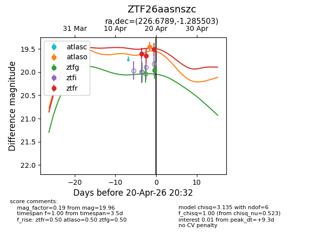
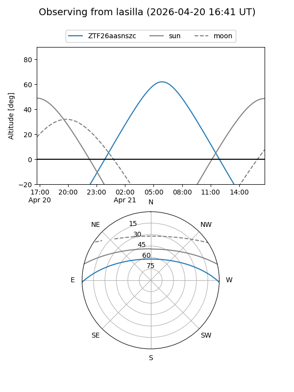
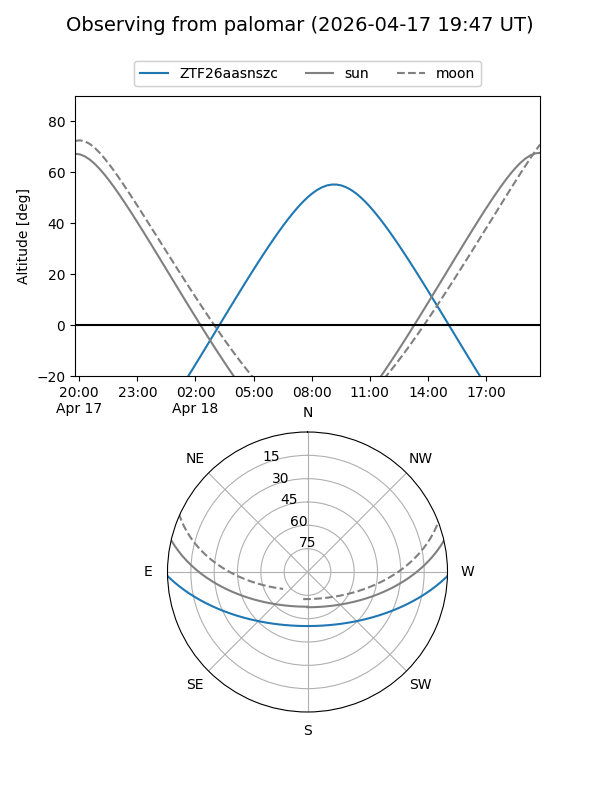
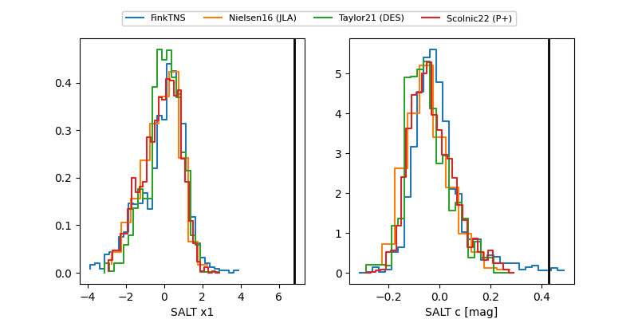

ZTF26aasnszc
Target ZTF26aasnszc at 2026-04-20 20:42
Aliases and brokers:
FINK: link
Lasair: link
ALeRCE: link
alt names
ZTF26aasnszc (ztf,fink_ztf)
Coordinates:
equatorial (ra, dec) = 226.6789,-1.28550
equatorial (HMS+DMS) = 15:06:42.94,-01:17:07.81
galactic (l, b) = (357.3094,+46.80116)
Flags:
Photometry:
last atlaso=19.45, ztfg=19.96, ztfr=19.51
1 atlaso, 1 ztfg, 3 ztfr detections
Lightcurve

Visibility


Additional plots
